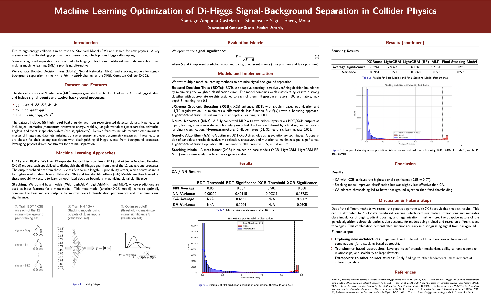

CS 229 Project
Project Summary
Our project explores machine learning methods for optimizing di-Higgs signal-background separation at the XFEL Compton Collider (XCC), focusing on maximizing signal significance. We trained 12 Boosted Decision Tree (BDT) and eXtreme Gradient Boosting (XGB) models, each specialized in distinguishing the signal from a specific background process. These model outputs were then fed into higher-level classifiers, including Neural Networks (NN), Genetic Algorithms (GA), and Stacking models, to refine the final classification. My primary contributions involved implementing and optimizing the training of XGB and BDT models, as well as developing the NN and GA frameworks to enhance classification performance. Our results show that GA with XGB achieved the highest signal significance, improving background rejection and strengthening future collider physics analyses.
Research Poster

Project Report
Read the full report here:
View Report (PDF)GitHub Repository
Find the complete code and implementation details on GitHub:
View on GitHub